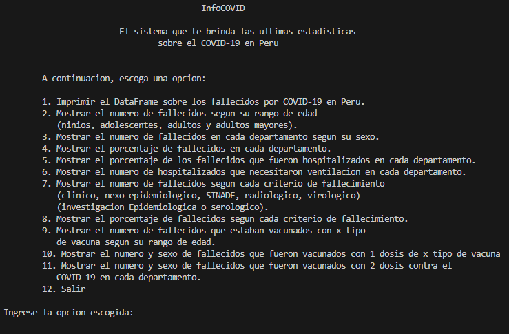
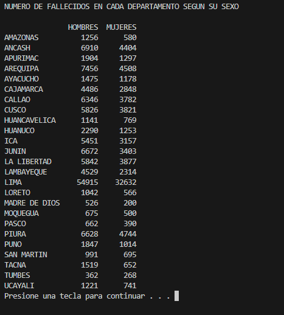

Características principales:
- Gráficos dinámicos: Representaciones visuales como líneas, barras y sectores para mostrar tendencias y proporciones.
- Tablas interactivas: Resumen detallado de estadísticas, como casos confirmados, recuperados y fallecimientos.
- Bibliotecas utilizadas: Matplotlib y Pandas para análisis y visualización.
Imágenes
Imagen de la pantalla principal
Al seleccionar la opcion 1 se ve el DataFrame de todos los datos
Al seleccionar una opcion se puede escoger entre ver una tabla o un gráfico
Si se selecciona ver tabla
Si se selecciona ver gráfico